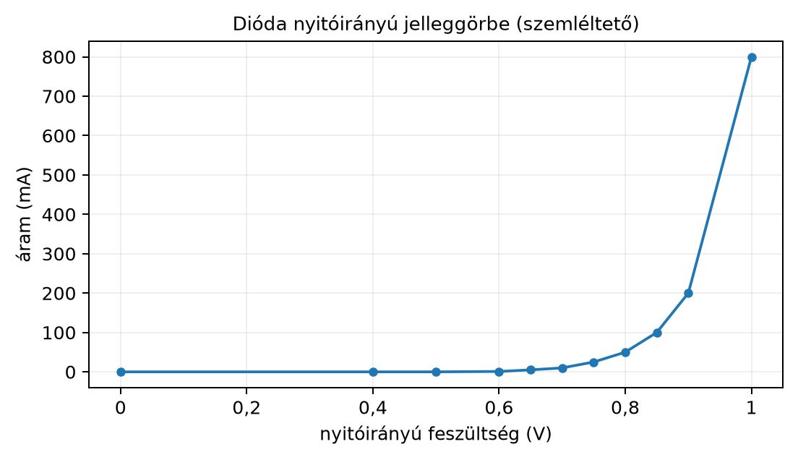
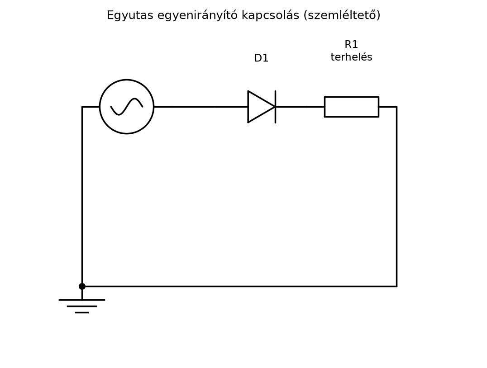

A jármű generátora (a köznyelvben „töltő”) működése közben váltakozó feszültséget állít elő, pedig a jármű fedélzeti hálózata egyenfeszültséget igényel: az akkumulátor töltése, a motorirányító, a világítás és a fedélzeti elektronika mind egyenárammal működik. Ha a generátor nem tölt, és a műszerfalon világít a töltés visszajelző, a szerelőnek pontosan értenie kell, miért felelős a generátor diódahídja az átalakításért. Ugyanez a elemcsalád – a félvezető dióda – jelenik meg a szabadonfutó diódákban (relétekercseknél), az elektronikus feszültségszabályozókban és a túlfeszültség-védelemben is. Ez az alfejezet a félvezető dióda viselkedését, a Zener-diódával megvalósított feszültségstabilizálást és az egyenirányító kapcsolásokat tanítja meg.
Képzeljünk el egy olaj-visszacsapó szelepet a motor kenőrendszerében: az egyik irányban nyomás hatására kinyit, a másik irányban a nyomás éppen zárva tartja. A félvezető dióda ennek villamos megfelelője: az egyik irányban kis feszültségeséssel vezet, a másik irányban gyakorlatilag lezár. Ha a váltakozó feszültséget (amelynek polaritása periodikusan váltakozik) rákapcsoljuk, a dióda csak a megfelelő polaritású félperiódusban enged áramot, így a kimeneten lüktető egyenfeszültség jelenik meg. A dióda jelleggörbéje ezt a viselkedést mutatja.

A chart azt mutatja, hogy a szilíciumdióda nyitóirányban csak egy küszöbfeszültség (kb. 0,7 V) elérése után kezd jelentős áramot vezetni; utána az áram meredeken növekszik. A záróirányú tartomány (negatív feszültség) itt nincs feltüntetve, mert a záróirányú áram nagyon kicsi.
Definíció. A félvezető olyan anyag (jellemzően szilícium vagy germánium), amelynek vezetőképessége a vezetők és a szigetelők között van, és szennyezéssel, hőmérséklettel vagy fénnyel befolyásolható.
Definíció. A saját vezetés a tiszta félvezető kristályban hőmozgás hatására felszabaduló elektronok és a hátrahagyott lyukak (pozitív töltéshordozóként viselkedő üres helyek) együttes elmozdulása.
Definíció. A szennyezett vezetés olyan félvezetés, amelyet szándékosan bevitt idegen atomok (szennyezők) hoznak létre. Ha a szennyező atomok szabad elektronokat adnak, n-típusú félvezetőt kapunk; ha lyukakat, p-típusút.
Definíció. A pn-átmenet egy p-típusú és egy n-típusú félvezető tartomány találkozása. Ezen a határrétegen belül a töltéshordozók rekombinációja miatt kiürített réteg jön létre, amely beépített feszültséget hoz létre (szilíciumnál kb. 0,7 V – ellenőrizendő: típustól függ).
Definíció. A félvezető dióda olyan kétkivezetésű alkatrész, amely egy pn-átmenetet tartalmaz. Az anód a p-oldal, a katód a n-oldal kivezetése. A dióda nyitóirányban (anód pozitív, katód negatív) kis feszültségeséssel vezet, záróirányban (katód pozitív, anód negatív) gyakorlatilag lezár.
Definíció. A Zener-dióda olyan dióda, amelyet arra terveztek, hogy záróirányban egy meghatározott letörési feszültségen (Zener-feszültség) stabilan, megengedett áram mellett üzemeljen. Feszültségstabilizálásra használják.
Összefüggés. A dióda nyitóirányú feszültségesése szilíciumdiódánál jellemzően – (gyakran -tal számolunk), germániumdiódánál –; a záróirányú áram normál üzemi hőmérsékleten mikroamper nagyságrendű.
A szilárdtest-fizika sávmodellje szerint az atomokban az elektronok csak meghatározott energiasávokat tölthetnek be. A legkülső, vegyértéksáv és a felette lévő vezetési sáv közötti energia-különbséget tiltott sávnak nevezzük. A vezető anyagokban a két sáv átfedi egymást (vagy a tiltott sáv nagyon keskeny), a szigetelőkben a tiltott sáv széles, a félvezetőkben pedig közepes (szilíciumban kb. 1,1 eV – ellenőrizendő). Ha a félvezetőben egy elektron elegendő energiát kap (pl. hőmozgásból), átugrik a vezetési sávba, és a vegyértéksávban lyuk marad. Mind az elektron, mind a lyuk részt vesz a vezetésben.
A saját vezetés tehát hőmérsékletfüggő: melegedéskor több töltéshordozó-pár keletkezik, a vezetőképesség nő. A gyakorlatban a diódák működése nagyrészt a szennyezett vezetésen alapul. Ha a szilíciumkristályba öt vegyértékelektronos atomokat (pl. foszfor, arzén) viszünk, akkor minden szennyező atomnak egy-egy elektronja lazán kötött, és könnyen szabad elektronná válik: n-típusú félvezető keletkezik. Ha három vegyértékelektronos atomokat (pl. bór, alumínium) adunk hozzá, akkor lyukak keletkeznek: p-típusú félvezető.
Amikor p-típusú és n-típusú tartományt érintkezésbe hozunk, a határfelületen a szabad elektronok az n-oldalról a p-oldalra, a lyukak a p-oldalról az n-oldalra diffundálnak. Az átlépő töltéshordozók rekombinálódnak, a határfelületen pedig visszamaradnak a szennyező atomok rögzített ionjai. Ez a kiürített réteg tértöltést hoz létre, amely belső elektromos teret alakít ki, és ez megakadályozza a további diffúziót. Ebből származik a beépített potenciálgát.
Ha külső feszültséget kapcsolunk a pn-átmenetre nyitóirányban (a p-oldalra pozitív feszültség, az n-oldalra negatív), akkor a külső tér csökkenti a kiürített réteget, és a töltéshordozók át tudnak lépni a határrétegen. A dióda vezet. A nyitóirányban mérhető feszültségesés a küszöbfeszültség (szilíciumnál kb. 0,7 V), amely az áramtól csak kis mértékben függ. Záróirányban (anód negatív, katód pozitív) a külső tér növeli a kiürített réteget, így a dióda gyakorlatilag nem vezet; a záróirányú áram csak néhány mikroamper.
A dióda rajzjelén a háromszög csúcsa a katód felé mutat; a háromszög a vezetési irányt jelöli (anód → katód).
A Zener-diódát záróirányban üzemeltetjük. A záróirányú feszültséget növelve elérjük a letörési feszültséget, ahol a záróirányú áram hirtelen megnő. A Zener-dióda úgy van kialakítva, hogy ez a letörés megengedett, és a feszültség a letörési tartományban közel állandó. Ezt a tulajdonságot használjuk feszültségstabilizálásra.
Egy egyszerű Zener-stabilizáló kapcsolásban a stabilizálandó bemeneti feszültségre sorba kapcsolunk egy előtétellenállást és a Zener-diódát. A terhelés a Zener-diódával párhuzamosan csatlakozik. Az előtétellenállás határozza meg azt az áramot, amely a Zener-diódán és a terhelésen együttesen átfolyik. Ha a bemeneti feszültség csökken, a Zener feszültsége (a letörési karakterisztika miatt) alig változik, így a kimeneti feszültség is stabil marad. Fontos, hogy a Zener-dióda mindig előtétellenállással használandó; anélkül a túláram tönkreteszi.
Az egyutas egyenirányító egyetlen diódából áll. A
váltakozó feszültség pozitív félperiódusában a dióda vezet, a negatívban
lezár, így a terhelésen csak a pozitív félperiódusok jelennek meg. A
kimeneti feszültség középértéke (ideális diódával, szinuszos bemenet
esetén):
ahol
a váltakozófeszültség csúcsértéke. A kimenet erősen hullámos.
A kétutas (középleágazásos) egyenirányító két diódát
és egy középleágazásos transzformátort használ. A két félperiódusban
felváltva vezet a két dióda, így a terhelésen mindkét félperiódusból
származó, azonos polaritású félhullám jelenik meg. A középérték:
A hídkapcsolású egyenirányító (Graetz-híd) négy
diódából áll, és középleágazás nélkül, szimmetrikusan hasznosítja
mindkét félperiódust. A pozitív félperiódusban két dióda vezet, a
negatívban a másik kettő. A kimeneti középérték ugyanaz, mint a kétutas
kapcsolásnál:
.
A gépjármű-generátorokban háromfázisú hídkapcsolást
alkalmaznak: hat dióda (két dióda fázisonként), amelyek a három fázis
váltakozó feszültségét egyenirányítják. A háromfázisú híd kimeneti
feszültségének hullámossága lényegesen kisebb, és a középérték
nagyobb:
A gyakorlatban a terheléssel párhuzamosan simító kondenzátort kapcsolnak, amely a hullámosságot csökkenti, a kimeneti feszültséget pedig a csúcsfeszültség közelébe emeli.
Az (a) rajzon a csillagba kötött állórész U, V, W kapcsa egy-egy hídágra csatlakozik: a D1–D3 pozitív diódák a B+ kapocsra, a D4–D6 negatív diódák a testre (31) vezetnek. Minden pillanatban annak a fázisnak a pozitív diódája vezet, amelyiknek a feszültsége a legnagyobb, és annak a negatív diódája, amelyiké a legkisebb; -nál ez a D1 és a D5 (vastag áramút). A (b) diagramon a kimenet a fázisfeszültségek felső és alsó burkolójának különbsége, középértéke kb. . A (c) rajz a 3. feladat Graetz-hídja: a pozitív félperiódusban a D1 és a D3, a negatívban a D2 és a D4 vezet. Az interaktív változat a hat vezetési szakaszt és egy zárlatos dióda hatását lépésenként mutatja.

A rajz egy egyutas egyenirányítót mutat. A váltakozó feszültségű forrás bal oldali kivezetése a testre van kötve, a jobb oldali kivezetése a diódán át a terheléshez csatlakozik. A dióda anódja a [3,4], katódja az [5,4] ponton van, így a pozitív félperiódusban az áram a forrás pozitív pólusából az anódon át a katód felé, majd a terhelésen keresztül a test felé folyik. A negatív félperiódusban a dióda lezár.
1. példa (egyszerű). Egy műhelytranszformátorról váltakozó feszültséget kapcsolunk egy egyutas egyenirányító bemenetére. Ideális diódát feltételezve számítsuk ki a csúcsfeszültséget és a kimeneti átlagfeszültséget, ha nincs simító kondenzátor.
Megoldás. A csúcsfeszültség:
Az egyutas középérték:
A kimenet tehát csak kb. 5,4 V átlagú lüktető egyenfeszültség; simító
kondenzátorral terhelés nélkül a kimenet a csúcsfeszültségig, 17 V-ig
emelkedhet.
2. példa (közepes). Egy érzékelő-áramkör 5,6 V stabil feszültséget igényel. A bemeneti feszültség a jármű hálózatából jön, ahol névlegesen 12 V, de 11–15 V között ingadozhat. A terhelő áram legfeljebb . Válasszunk Zener-diódát letörési feszültséggel, és határozzuk meg az előtétellenállást úgy, hogy a Zener-dióda minimális üzemi árama legyen.
Megoldás. A legrosszabb eset a minimális bemeneti
feszültség, ekkor kell a Zenernek még megbízhatóan vezetnie.
Válasszunk szabványos
ellenállást. Ellenőrizzük maximális bemenetnél
():
az összáram
A Zener árama:
.
Ha a Zener-dióda megengedett maximális árama például 50 mA
(ellenőrizendő: gyártói adat), akkor a kapcsolás teljes terhelésnél
biztonságos.
Legrosszabb eset a Zenerre: a legnagyobb bemeneti feszültségnél () és terhelés nélkül () a teljes áram a Zenerre jut: , a disszipáció . Az előtétellenállás teljesítménye , ezért legalább -os, jobb, ha -os ellenállást választunk. Ellenőrizendő: a Zener-dióda adatlap szerinti és értéke.
3. példa (híd). Ugyanarra a 12 V effektív
váltakozófeszültségre hídkapcsolású egyenirányítót kapcsolunk. Mekkora a
kimeneti átlagfeszültség?
A hídkapcsolás tehát kétszer akkora átlagfeszültséget ad, mint az
egyutas.
Előírás. A járműgenerátor diódahídjának ellenőrzésekor a gyártói javítási utasítás szerint kell mérni: a dióda nyitóirányú feszültségesése és a záróirányú szivárgási áram határértékei típusonként eltérnek. A mérés előtt ki kell kapcsolni a gyújtást, és a gyártói előírás szerint (adatmentés; ellenőrizendő) le kell kötni az akkumulátor negatív (test) saruját – először a testet, felkötéskor fordított sorrendben –, mert a generátor B+ kivezetése gyújtás nélkül is feszültség alatt van, és a leszerelésnél a kulcs a testtel rövidzárat okozhat. Csak ezután szabad a generátor kivezetéseit leválasztani. Az itt megadott értékek tanulási példák (ellenőrizendő: gyártói adat).
A diódát digitális multiméter dióda üzemmódjában a legegyszerűbb ellenőrizni. A műszer ilyenkor kis nyitóirányú áramot küld a mérendő alkatrészen, és a feszültségesést mutatja. A mérés lépései:
Zener-dióda esetén a záróirányú letörési feszültség méréséhez korlátozott áramú áramkört (például egy előtétellenállással) kell használni; a multiméter dióda üzemmódja általában nem elegendő a magasabb letörési feszültség kimérésére.
Tünet. A műhelybe behozott autón a töltés visszajelző halványan világít, és a fedélzeti hálózat feszültsége járó motornál csak (egészséges rendszernél –, ellenőrizendő: típusfüggő). Az akkumulátor indításkor megfelelő, de utazás közben a fogyasztók gyengülnek.
Vizsgálat. A szerelő kikapcsolja a gyújtást, a gyártói előírás szerint (adatmentés; ellenőrizendő) lekötötte az akkumulátor negatív (test) saruját, és csak ezután szereli le a generátor B+ kivezetését és csatlakozóját, és dióda üzemmódban megméri a diódahíd egyes diódáit. Az egyik dióda nyitóirányban feszültségesést mutat – ez normális –, de záróirányban is értéket ad, és a multiméter sípol. A dióda tehát záróirányban is vezet, azaz rövidzáras.
Ok. A rövidzáras dióda miatt a híd már nem egyenirányít helyesen: az egyik fázis árama visszafolyik a generátor tekercsébe, a kimeneti feszültség hullámossága megnő, a töltési teljesítmény csökken. A hibás dióda melegedhet, tovább károsíthatja a diódahidat.
Javítás. A diódahíd cseréje a generátoron, a gyártói javítási utasítás szerint. Ha a generátor hőterhelése miatt más alkatrész is károsodott (pl. szénkefék, feszültségszabályzó), azokat is ellenőrzik. A szerelés után feszültségmérés járó motornál: a kimenetnek körül kell lennie (ellenőrizendő: típusfüggő), és a töltés visszajelzőnek ki kell aludnia. A hibakód-tárból törölhető a múltbeli alacsony feszültségre utaló bejegyzés.
Tanulság. Egy rossz dióda tünete könnyen összetéveszthető az akkumulátor hibájával vagy a szénkefék kopásával. A célzott dióda mérés (nyitó- és záróirány) egyértelműen elkülöníti a hibát, és megakadályozza a felesleges alkatrészcserét.
Válaszolj röviden, majd ellenőrizd a leckében található magyarázatokkal.
1. feladat (A). Magyarázd el a pn-átmenet nyitó- és záróirányú viselkedését a kiürített réteg változásával.
2. feladat (A). Egy egyutas egyenirányító bemeneti váltakozófeszültségének effektív értéke . Számítsd ki a csúcsfeszültséget és a kimeneti átlagfeszültséget ideális dióda esetén.
3. feladat (B). Rajzold le szövegesen a hídkapcsolású egyenirányító áramútját a pozitív és a negatív félperiódusban. Melyik diódák vezetnek az egyes esetekben?
4. feladat (B). Egy Zener-stabilizátorban , , az előtétellenállás , a terhelő áram . Mekkora a Zener-dióda árama?
5. feladat (C). Hasonlítsd össze az egyutas, a kétutas középleágazásos és a hídkapcsolású egyenirányítót a diódák száma, a kimeneti feszültség középértéke és a hullámosság szempontjából. Miért használnak a gépjármű-generátorok háromfázisú hídkapcsolást?
6. feladat (D). Generátor-diagnosztika. A multiméter dióda üzemmódjában az egyik diódán nyitóirányban , záróirányban OL látható. A másik diódán nyitóirányban , záróirányban . Melyik dióda hibás, és milyen következménye lehet a töltésre?
Önellenőrzés – válaszok
Feladatok – megoldások
1. feladat. Nyitóirányban (anód pozitív, katód negatív) a külső feszültség csökkenti a kiürített réteg szélességét, így a töltéshordozók át tudnak lépni a határrétegen, és a dióda kis feszültségeséssel vezet. Záróirányban (anód negatív, katód pozitív) a külső feszültség növeli a kiürített réteget, a határréteg lezár, és csak elhanyagolható záróirányú áram folyik.
2. feladat. . Az egyutas középérték: .
3. feladat. A hídkapcsolás négy diódát használ két-két párban. Pozitív félperiódusban az áram a bemenet pozitív csúcsáról a D1 diódán át a terhelésre, majd a terhelésből a D3 diódán át vissza a bemenet negatív csúcsa felé folyik. Negatív félperiódusban a bemeneti polaritás megfordul; ekkor az áram a D2 és D4 diódán át ugyanolyan irányban halad a terhelésen. Mindkét félperiódusban azonos polaritású feszültség jelenik meg a kimeneten.
4. feladat. Az összáram:
A Zener árama:
.
5. feladat. Egyutas: 1 dióda, , nagy hullámosság. Kétutas középleágazásos: 2 dióda, , kisebb hullámosság. Hídkapcsolás: 4 dióda, , ugyanolyan hullámosság, de középleágazás nélkül. A gépjármű-generátorok három fázisú hídkapcsolást használnak, mert a három fázis egyenirányítása hat diódával kisebb hullámosságú és nagyobb kimeneti feszültséget ad, ami a járműhálózat stabilitása szempontjából fontos.
6. feladat. Az első dióda jó: nyitóirányban (szilíciumra jellemző), záróirányban OL (szakadás). A második dióda rövidzáras, mert mindkét irányban nagyon alacsony, közel azonos feszültségesést mutat. A rövidzáras dióda miatt a híd egyik ága zárlatos lesz a generátor tekercsében, a töltési teljesítmény csökken, a kimeneti feszültség hullámos lesz, és a generátor túlmelegedhet.
A félvezető dióda a pn-átmenet tulajdonságain alapul: nyitóirányban kis feszültségeséssel vezet, záróirányban gyakorlatilag lezár. A szennyezett vezetés (n- és p-típus) hozza létre a kiürített réteget, amely a dióda viselkedését szabályozza. A Zener-dióda záróirányú letörését használjuk feszültségstabilizálásra, mindig soros előtétellenállással. Az egyenirányító kapcsolások (egyutas, kétutas, híd, háromfázisú híd) a váltakozó feszültséget lüktető egyenfeszültséggé alakítják; a hídkapcsolás mindkét félperiódust hasznosítja, a háromfázisú híd pedig kisebb hullámosságot ad. Továbbvitt eredmény. A dióda és egyenirányítás alapelveit használjuk a tranzisztorok és tirisztorok tárgyalásánál (Tranzisztorok, tirisztorok és optoelektronika), valamint a generátor diódahídjának vizsgálatánál (A generátor).
A szakmai tartalom szabványos villamossági alapismereteken, a járműgenerátorok szerkezeti leírásain és általános félvezető-elektronikai szakkönyveken alapul. A kapcsolási rajzok a szabványos rajzjelek (MSZ EN 60617 / IEC 60617) szerint készültek. A konkrét határértékek, mint a Zener-dióda maximális árama, a szilíciumdióda nyitófeszültsége, a generátor töltőfeszültségének tartománya és a tiltott sáv szélessége, tanulási példák; a gyártói javítási adatokat és a használt alkatrészek adatlapjait mindig ellenőrizni kell. Nincs jogszabályi vagy ECE-előírásra vonatkozó állítás ebben az alfejezetben.